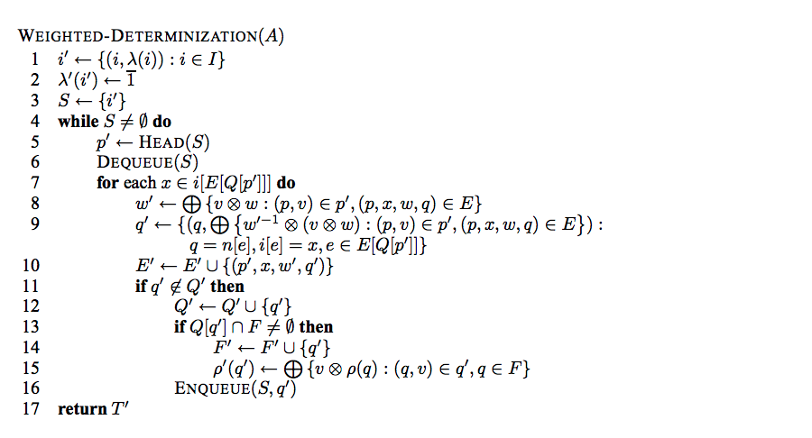
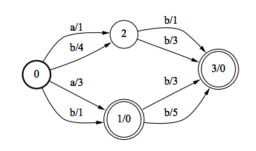
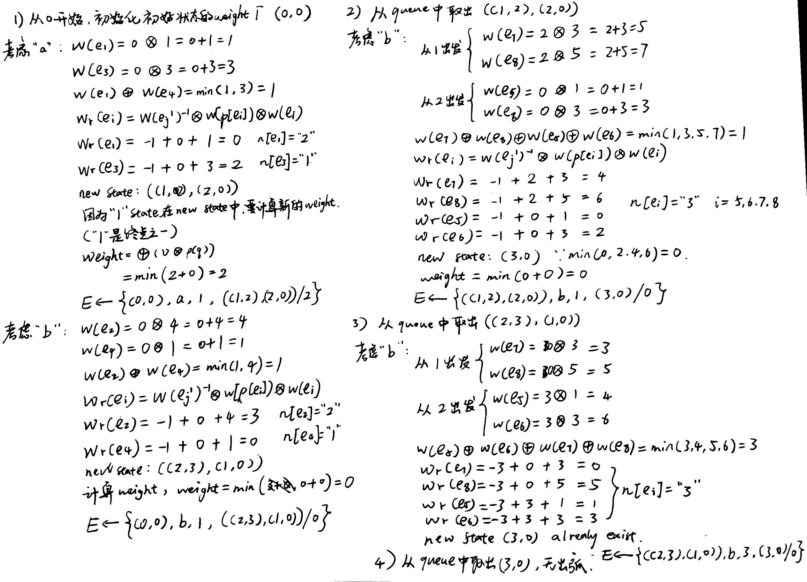
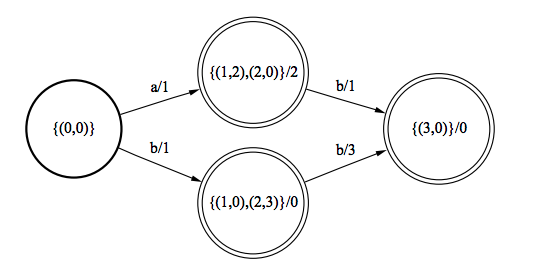
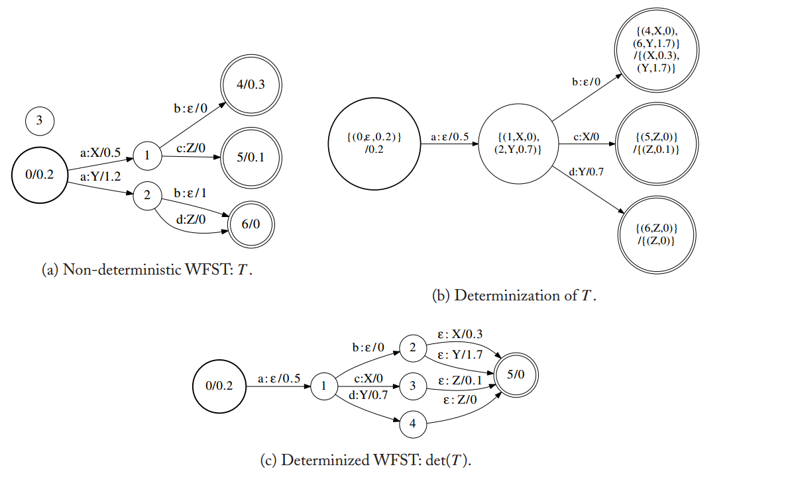

WFST详解#4
Determinzation
本文是WFST系列文章的其中一篇，想要了解更多可以点击这个系列的目录，欢迎您的到来～
定义
Determinization是WFST优化的一个重要算法。它的意思是确定化。从一个状态出发的弧当中，输入状态不能重复。如果存在重复的输入，那么如果有一个输入到这个状态，它将无法判断要从哪一个弧线输入。这会造成整个转换效率的降低。
优化之后的转换器有如下的特点：
- 状态根据弧上输入的标签进行组合
- 对同一个状态来说，不能重复同样的输入
- 最后状态要压缩成一个，即不存在超过一个的终止状态
- 到达最后状态的转换使用epsilon转换（空转换）
算法
下面是Moris论文中的伪代码：

上面的代码直接看可能有点吃力，在这里对该整体进行一个阐述。首先，该算法是在原本的图的基础上构建一个新的图，因此我们需要对一些状态进行聚合，然后新建一些弧。而状态的产生也正是依赖这些弧。产生弧的过程，也是整个图产生的过程。弧的产生需要有起始状态，标签，权重，目标状态。
- 从源头开始，初始化，将起始状态的权重初始化为。
- 计算权重：从起点开始，对于相同的输入标签，我们通过将起始权重和当前弧进行操作。我们可以获得一系列的值。最后整体通过一个，便可以得到一个权重。
- 通过公式，计算出新的状态的权重。通过这些权重和标签，我们可以得到新的状态了。这个权重作为下一次计算的起始权重。
- 如果当前新的状态中，存在着终止状态，则需要计算新的终止状态的权重。
手算
下面，我们举一个例子，将下面的WFSA确定化。这里我们使用Tropical semiring的运算规则。

手推如下：

我们最终可以的到结果如下所示：

可以看到，推导的结果和最终结果一致。
WFST
对于WFST，我们有如下的一些处理：使用三元组来替代原本WFSA的二元组。三元组的三个值分别代表原本的状态标签，输出值和权值。在弧上，我们加入输出的标签。下面是一个例子：

分析一下上面的变换。第一幅图是一个普通的WFST，通过det操作之后转换成了另一个。对比我们可以发现初始权重是转变成了。转移的弧上的权重我们选择一个相同输出中，权重最小的(Tropical semiring的min)。而弧上的输出则根据来确定，在图上的情况是。到达的目标状态根据转移的弧上面的数值进行处理（1.2-0.5=0.7,0.5-0.5=0），组成三元组。
最后，我们要把状态的符号映射到普通的符号上，并且对终止的状态进行压缩。压缩的方法很简单，就是创造一个新的终止状态，原本的终止状态转移向它。然后把原本终止状态的权重和三元组符号转移到弧上。如图所示，非常清晰。